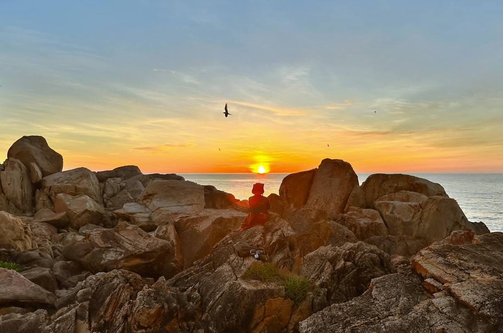

Hải Đăng Gành Đèn
Ngọn hải đăng duyên dáng bên những khối đá kỳ vĩ


Giới Thiệu Chung
Hải đăng Gành Đèn (hay Ghềnh Đèn) tọa lạc tại xã An Ninh Đông, huyện Tuy An, tỉnh Phú Yên, nổi bật với hai màu sơn đỏ trắng trên nền những tảng đá granit hồng xếp chồng lên nhau. Dù không đồ sộ như Hải đăng Đại Lãnh, Gành Đèn mang một vẻ đẹp duyên dáng, bình dị và là điểm đến không thể bỏ qua khi khám phá khu vực Bắc Phú Yên.
Ngọn hải đăng này có nhiệm vụ dẫn đường cho tàu thuyền ra vào vịnh Vũng Chào và đầm Ô Loan. Đứng từ Gành Đèn, du khách có thể thu vào tầm mắt một vùng biển trời bao la, những khối đá đủ hình thù kỳ lạ và xa xa là Gành Đá Đĩa nổi tiếng. Khung cảnh nơi đây đặc biệt thơ mộng vào lúc bình minh hoặc hoàng hôn.
Điểm Nổi Bật
- Kiến trúc đơn giản, nổi bật: Ngọn hải đăng hình trụ, sơn hai màu đỏ - trắng đặc trưng, cao khoảng 10m, đứng vững chãi giữa biển trời.
- Khung cảnh đá độc đáo: Xung quanh hải đăng là bãi đá granit màu hồng nhạt, bị bào mòn bởi sóng biển tạo nên những hình thù lạ mắt, là nơi check-in lý tưởng.
- Vị trí gần Gành Đá Đĩa: Rất thuận tiện để kết hợp tham quan cùng Gành Đá Đĩa, một trong những biểu tượng của du lịch Phú Yên.
- Không gian yên bình: So với các điểm du lịch đông đúc khác, Gành Đèn giữ được nét hoang sơ, tĩnh lặng, thích hợp cho những ai muốn tìm một nơi thư giãn, ngắm cảnh.
Hoạt Động Trải Nghiệm
- Tham quan, chụp ảnh cùng ngọn hải đăng và các khối đá.
- Ngắm cảnh biển, tận hưởng không khí trong lành, mát mẻ.
- Quan sát hoạt động của tàu thuyền ngư dân.
- Kết hợp tham quan Gành Đá Đĩa, Nhà thờ Mằng Lăng, Đầm Ô Loan.